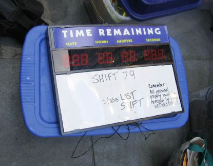

Posted By Simon on 8/31/2005 3:22:01 AM EST
Number of people currently in line: 0
Well, here it is. And I will not say do not weep, for not all tears are an evil.
Star Wars Episode III: Revenge of the Sith will have its last showing on Thursday 9/1/2005 at 10:35PM at the AMC Empire 25 (234 W. 42nd St, just east of 8th Ave.) The run is ending. After that, there will be no more theaters in NYC showing the film at all. Two second-run houses deep in Jersey have been running it for a few weeks now, but that's second run.
Of late, the movie has been playing in one of the AMC's small auditoriums, with only 69 chairs. (73 saleable seats if you count the handicap spots). And also, they've begun sharing the screen, so there has been no evening show, just the two afternoon shows and the late (10:35PM) show. So whether you haven't seen the movie since opening night, or haven't seen it in a while (or if you've seen it every single day since 5/18/05 like SOME people), I encourage any and all of you to carve out the time, however seemingly inconvenient, to come out for something as once in a lifetime as opening night. Closing night is very special, and truly the last chance to savor what we've all shared unparalelled anticipation and love for these past years. If you can make time for opening night, you can make time for a late movie in most cases.
We'll be meeting for dinner beforehand starting at 7:30 PM at the Westway Diner (614 9th avenue between 44th and 43rd streets). We'll leave the diner at about 9:00 PM and walk over to the theater, estimating a 9:30 arrival at the AMC. This way we can be seated by a nice early 9:45-9:50. So, if you want to just come for the dinner and skip the movie, or just make the movie right before showtime, you can plan accordingly. I suggest ordering or picking up tickets in advance, purely since this room is only 69 seats and does actually sell out on the weekends, so it could theoretically sell out for this show.
This is it, folks. The PT ends here. So, I hope to see you all in the aisles for one last binary sunset in a new Star Wars movie.
As Darth Vader would say:
NOOOOOOOOoooooooooooooooooooo!!!!!!!!!!!